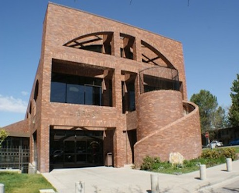

Orem Utah

History
Orem is a city in Utah County, Utah, United States, in the northern part of the state. It is adjacent to Provo, Lindon, and Vineyard and is approximately 45 miles (72 km) south of Salt Lake City. Orem is one of the principal cities of the Provo-Orem, Utah Metropolitan Statistical Area, which includes all of Utah and Juab counties. The 2019 population estimate was 97,828, while the 2010 population was 88,328[5] making it the fifth-largest city in Utah. Utah Valley University is located in Orem. Orem uses the slogan "Family City USA." In 2010, Forbes rated it the fifth best place to raise a family. Time magazine rated the Provo-Orem area as the best place to live for spiritual well-being, due to a high population of members of The Church of Jesus Christ of Latter-day Saints.